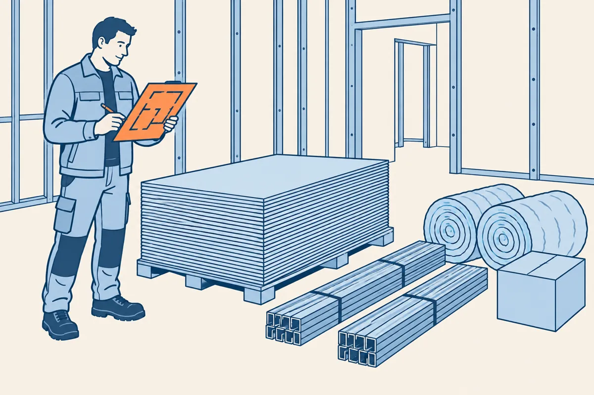

⬅ La ligne Lire les plans · Plâtrerie et isolation

Le plaquiste tire sa commande du plan : des plaques, des rails, des montants, de l'isolant. Dans l'exercice, vous chiffrez la cloison C1 du vestiaire, dessinée à la gare Plâtrerie 1.
Environ 2 heures, calculatrice en main. À la fin, vous saurez :
Comment travailler. Lisez les écrans 2 à 8 : chaque geste a sa méthode et un exemple résolu sur la cloison C2 d'un bureau. Faites ensuite l'exercice sur la cloison C1 : chaque question dit l'écran à relire. La leçon existe aussi sur papier, avec les mêmes numéros d'écran (bouton « Leçon (PDF) » en haut de la gare).
Un chiffrage part de quatre données. Chacune se lit à un endroit précis du dossier.
| Donnée | Où la lire |
|---|---|
| La longueur de la cloison | sur le plan de niveau, la cote le long de la cloison |
| La hauteur sous plafond | sur la coupe, du sol fini au plafond |
| Les portes et leurs dimensions | sur le plan, la cote de la baie (ex. porte de 830) |
| Plaques, entraxe, marge, déduire ou non les portes | dans le descriptif, ou dans les données de l'exercice |
Les cotes du plan sont en millimètres. Pour calculer en mètres, divisez par 1000 : la virgule recule de trois rangs. 4200 mm = 4,20 m ; 830 mm = 0,83 m ; 2040 mm = 2,04 m.
Sur le plan au 1/50 ci-dessus, la cote 4200 court le long de C2 : longueur 4,20 m.
La coupe donne une hauteur sous plafond de 2500 mm : hauteur 2,50 m.
La porte de C2 mesure 830 mm de large ; sa hauteur, 2040 mm, est dans le tableau des menuiseries : 0,83 m × 2,04 m.
Le descriptif donne : une plaque par face, face bureau en plaques standard, face sanitaires en plaques hydrofuges, plaques de 2,50 × 1,20, entraxe 0,60 m, marge de chutes 10 %, porte à ne pas déduire. Une plaque hydrofuge résiste à l'humidité ; elle se pose côté douche ou sanitaires.
Surface d'une cloison = longueur (lue au plan de niveau) × hauteur sous plafond (lue à la coupe). Un doublage se calcule de la même façon, avec la longueur du mur doublé.
Une cloison 72/48 mesure 72 mm d'épaisseur finie, sur une ossature de 48 mm. Elle a deux faces. On calcule la surface d'une face, puis on traite chaque face à part, car les deux faces ne reçoivent pas toujours la même plaque.
Les ouvertures (portes, fenêtres, portes-fenêtres) se déduisent toutes, sauf consigne contraire du descriptif. Si le descriptif dit « ne pas déduire la porte », la surface de la cloison reste sa surface brute.
Surface brute d'une face : 4,20 × 2,50 = 10,50 m².
Surface de la porte : 0,83 × 2,04 = 1,69 m².
Si le descriptif disait de déduire la porte : 10,50 − 1,69 = 8,81 m².
Ici, le descriptif dit de ne pas la déduire : la surface d'une face reste 10,50 m².
Une surface s'arrondit au centième : 1,6932 m² s'écrit 1,69 m². Les mêmes gestes sur un autre plan sont à la gare 7 bis, écrans 4 à 7.
La plaque prise dans cette gare mesure 2,50 m × 1,20 m = 3 m². Sur un vrai chantier, le format se lit dans le descriptif.
La méthode, pour chaque face :
Face bureau, plaques standard : 10,50 × 1,10 = 11,55 m², puis 11,55 ÷ 3 = 3,85, soit 4 plaques standard.
Face sanitaires, plaques hydrofuges : même surface, même calcul, soit 4 plaques hydrofuges.
On ne commande pas 8 plaques standard : la face sanitaires demande des plaques hydrofuges, comptées sur leur propre ligne.
Un nombre de plaques s'arrondit toujours à l'entier supérieur, même à 3,1 : on commande des plaques entières. Une plaque de trop se stocke, une plaque manquante arrête le chantier.
Le « plus 1 » vient des intervalles : sur 1,20 m à 0,60 m d'entraxe, il y a 2 intervalles et 3 montants, un à chaque bout et un au milieu.
Rails : 2 × 4,20 = 8,40 m.
Montants courants : 4,20 ÷ 0,60 = 7 intervalles, plus 1 : 8 montants.
Renforts de baie : la porte de C2 en demande 2.
Isolant : 4,20 × 2,50 = 10,50 m², compté une seule fois.
Si la division ne tombe pas juste, arrondissez le nombre d'intervalles à l'entier supérieur, puis ajoutez 1. Exemple : 4,50 ÷ 0,60 = 7,5, soit 8 intervalles et 9 montants.
Chaque ligne d'un devis donne la désignation, l'unité, la quantité, le prix unitaire et le total. Le lecteur de plans vérifie la colonne quantité, ligne par ligne :
| Désignation | Unité | Quantité | Verdict |
|---|---|---|---|
| Plaques standard | u | 4 | juste (écran 4) |
| Plaques hydrofuges | u | 4 | juste (écran 4) |
| Rails R48 | m | 4,20 | Faux : 8,40. Un rail au sol et un au plafond. |
| Montants M48 | u | 7 + 2 renforts | Faux : 8 + 2. Le montant de fermeture est oublié. |
| Isolant 45 mm | m² | 10,50 | juste : une seule fois |
Les erreurs qui reviennent dans un devis de cloison : une face oubliée, ou comptée deux fois avec la même plaque alors qu'elle demande une plaque hydrofuge ; l'isolant compté sur les deux faces ; le rail compté une seule fois ; le montant de fermeture ou les renforts de baie oubliés. Contrôlez ces cinq points sur chaque devis.
Une cloison se compose d'une ossature (rails et montants), d'un isolant au milieu, et d'un parement sur chaque face.
10,50 m² de cloison demandent 2 × 10,50 = 21,00 m² de plaques avant la marge, et 10,50 m² d'isolant.
Pour expliquer une règle en une phrase, dites la règle, puis sa raison avec « car ». Exemple sur l'isolant : « L'isolant se compte une seule fois, car il est placé entre les deux faces de la cloison. »
Le chiffrage d'une cloison suit toujours le même ordre. Gardez cet écran sous les yeux pendant l'exercice.
| Étape | Geste | Écran |
|---|---|---|
| 1 | Lire longueur, hauteur, portes et consignes ; passer en mètres | 2 |
| 2 | Surface d'une face, porte déduite ou non selon le descriptif | 3 |
| 3 | Plaques face par face : marge, ÷ 3, entier supérieur | 4 |
| 4 | Rails, montants + 1, renforts, isolant une fois | 5 |
| 5 | Comparer chaque ligne du devis à vos calculs | 6 |
Écrivez chaque calcul en entier, avec son unité : 4,20 × 2,50 = 10,50 m². Avec le calcul écrit, vous retrouvez vous-même une erreur.
Répondez à tout, votre score s'affiche en bas. Calculatrice autorisée.
Vous savez passer du plan à la commande : surfaces, plaques, ossature, et contrôle de la colonne quantité d'un devis.
Télécharger la leçon papier (PDF) Télécharger l'exercice papier (PDF)
Pour l'enseignant, le corrigé est dans l'espace enseignant, sous code. L'exercice fait chiffrer la cloison C1 du vestiaire (plaques standard et hydrofuges, ossature, isolant), puis vérifier un petit devis qui contient deux erreurs.
Gare suivante : Plâtrerie 6, un dossier complet, seul et en temps limité.